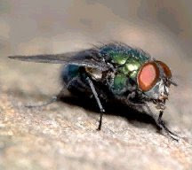
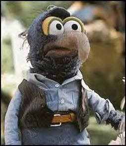
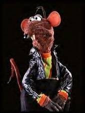

Vanderboegh: Absolved -- The Squad -- Rubicon

The Squad -- "Rubicon"
A chapter of 'Absolved'
by Mike Vanderboegh
Disclaimer:
This is a fictional work of precognitive history. Any resemblance to
persons living or dead is strictly coincidental, as far as you know.
Blow Fly:
any of a large family of flies known for the habit of the larvae, or
immature flies of, infesting animal carcasses. They are found worldwide,
occurring nearly every place inhabited by people. Blow flies are
slightly larger than true house flies, and the bodies of many are
metallic blue or green in color. Worldwide, there are about 1200 species
of blow flies, and in North America there are 80. . . they have robust
bodies and wide heads. The name blow fly comes from the bloated
condition of the rotting animal carcasses that their larvae, known as
maggots, infest. The most frequent species found under these conditions
is the common blow fly.
Unfinished Business: "Blowfly"
They
may have been chased unceremoniously out of the state of Alabama, but
ATF had not given up on finding their ten missing agents. Nor had they
given up on finding Charlie Quintard. Barton Meigs' replacement as
regional director of the ATF was everything AD Atherton could have
wanted. This was probably because Atherton himself had hand-picked her.
Dody
Saako was just perfect for the job. She evinced a certain
predisposition to the slavish obedience of orders, combined it with a
vicious disdain for the legal niceties in carrying them out and
possessed on top of it all an insatiable appetite for advancement. For
Atherton's purposes, Dody Saako was just what the tyrant ordered.
Her
rise in the agency had been nothing short of meteoric. Other agents,
perhaps jealous or perhaps simply having more scruples, said she had
fellated her way to the top. She had acquired several nicknames in her
short career. "Blowfly" was one, for obvious reasons. "Floater" was
another, as in "shit floats to the top of any body of water." However
she had managed it before this, it was assumed that she got this
position without her feminine wiles. Atherton was well-known as the
raving queen of the DC ATF hierarchy and his appetites did not extend to
the females of the species, even predatory pseudo-masculine types such
as Saako.
For its part, Brightfire felt it had some unfinished
business too. After the Winston County Massacre, the Winston County
Sheriff's Department had found and secured the tracker team's vehicle
when they moved to investigate the still smoking Miller Mine. The
vehicle surrendered no clues as to the whereabouts of the missing team. A
week later, ABI had sent a state fire-rescue team into the bowels of
that smoldering Hell and retrieved three, well, if not bodies in the
strictest sense, then human remains.
Three, not four.
Thus was one more mystery laid at the door of Charlie Quintard.
John
Claxton of Brightfire intended to solve that mystery first. Which was
why Jaime Sepulveda had parked his battered pickup loaded with old
lawnmowers at the entrance to Miller Mine. It was good cover. A lot of
Mexican illegals had gone home after the recession (some said
depression) in El Norte claimed their jobs. But there were still bunches
of them scraping by in north Alabama. They did their very best to avoid
being pulled into either side of the current Tenth Amendment argument,
so neither side paid them much attention. Thus no one had blinked an eye
at Jaime as he drove his pickup with valid Winston County tags past the
eagle-eyed state troopers who were still roaming about in search of
feds and mercenaries to disarm and escort beyond the state line.
Jaime
was a trained crime scene investigator. The company had made use of him
many times all over the world, usually to cast doubt on other CSI's
work at the scenes of Brightfire "excesses," enabling company
contractors to avoid prosecution or conviction in local courts. Now
Miller Mine was his crime scene. He had no interest in going into the
mine. He was searching the immediate area outside the mine entrance for
clues to what might have happened to one Patrick Docker, late of South
Armagh, Northern Ireland. It was, he thought, looking at the mucked up
ground left by the state and county authorities, a fool's errand.
An
hour later, he was convinced of it. There was nothing here. Nothing
that told him anything at any rate. He looked up at the stone archway.
"1918." Well, that was the last place to look, he thought. Might as well
convince them back in Virginia that I'm thorough. He scrambled up the
blackened hillside, making for the top of the arch. The vegetation had
all burned away, and rains had deposited more silt and pebbles downhill,
mixed with streaks of charcoal and soot. There was an eroded channel
behind the top of the archway, big enough for a man to hide in, but
nothing more. He turned to make his way down the hillside when the sun
came out from behind a cloud and glinted off something yellow at the
other end of the channel. He carefully made his way over and saw
immediately that it was a piece of brass. .45 ACP. Hmmm. He pulled an
evidence baggie out of his pocket and used a pen to flick the brass into
the bag.
Jaime Selpuveda searched some more, but found nothing
else. "Now what," he addressed the piece of bagged brass, "are you doing
up here?" There were a thousand possible explanations. He wondered
about the most likely of them all the way back to the ATF lab in
Nashville.
"So," said "Blowfly" Saako, "what have you found?"
There
were four people in the conference room. Saako, John Claxton, Jaime
Sepulveda, and the ATF evidence technician Dennis Warren.
"Ma'am,"
began Warren, "Mr. Selpuveda found this .45 caliber shell casing at the
Miller Mine site. It matches with several others found five years ago
at a drug hit in Walker County, Alabama. A DEA informant was killed."
"Walker County? Not Winston?" Saako asked abruptly.
"Ma'am, Walker County is southeast of Winston and they share a common border."
"I see, go ahead."
"The
bullets in that case were recovered as well, and matching the markings
on both bullets and casings, the evidentiary conclusion at that time --
which I agree with having gone over it in detail -- "
Saako cut him off. "Get to the damn point."
"Yes,
ma'am." The technician was nervous. He didn't like mercenaries and he
didn't like Saako although he'd known her all of four and a half
minutes. "As I was saying, they match to the same MAC-10 machine pistol
fired with a sound suppressor. The suppressor is ever so slightly off
center and the markings on the bullets recovered from Walker County
indicate slight nicks where they hit the metal at the end of the tube on
the way out. It can't be very accurate at distance. The estimated range
in the Walker County hit was just 4 feet or so. I . . ."
"All right, do you have anything else?"
"Ma'am, I . . ."
Saako turned to Sepulveda. "Does he?" she demanded.
Jaime Sepulveda shook his head in the negative.
"Do you?"
John Claxton answered for his CSI. "Yes, we do."
Saako turned back to the ATF tech. "All right, you can go. Leave the evidence."
The
tech sagged with relief, grabbed the table top and pushed himself up as
if struggling with gravity. He left as quickly as possible. Selpuveda
raised an eyebrow at Claxton and he nodded in return. The Brightfire CSI
stood and left the room as well.
Saako turned to Claxton. "What do you have?" she said preemptorily.
"We
have ah, sources, within the DEA. At the time of the killing of their
snitch, they had a very good suspect for this murder. Unfortunately, he
disappeared shortly afterward."
"Disappeared?"
"Yes, along with between five and seven of his confederates. The DEA says they just vanished."
"Vanished, huh?" said Saako. "There's a lot of that going around in that f-cking state." She paused. "And you conclude what?"
"It
seems reasonable to me that whoever your agents ran into is probably
the same man that these missing druggies encountered. And whoever that
is, that person acquired the MAC-10 from the druggies. DEA says their
suspect was running meth labs in several counties at the time, including
Winston. Finally, there is one other thing. There was a report that
some years ago Phil Gordon had trouble with somebody cooking meth in his
empty cabin just before he rented it to Charlie Quintard. He was
overheard saying that was the reason he rented it to Quintard, to keep
the druggies from coming back."
"So you think that Quintard killed the druggies and then used the MAC-10 on my agents and your contractors?"
"It
is not a tremendous leap of logic. My team was tasked to track down and
find Charlie Quintard. When the blimp came down, they refused to leave
what they were doing and chase the blimp bombers. I can only conclude
that they had something more important going on at the time than that.
The ONLY thing more important than that was Quintard. Remember, I lost
three of my men to the explosion in that mine. Their remains were
recovered. One is unaccounted for. The team would not have gone into the
mine without leaving a security man outside. And Jaime recovered just
one piece of brass from the mine entrance. One man, one shot, close
range. It fits."
"And Quintard moved the body? Where?"
"I
don’t know, and we probably will never know. Quintard may have moved it,
maybe he had friends do it for him. It seems unlikely that one burnt
out computer geek can turn into the Terminator. I'd say he probably had
help, maybe even with the killings."
"So who are his friends?" asked Saako.
"From
some random communications intercepts and other evidence, we believe
this man holds the key to Quintard's whereabouts," Claxton said as he
passed a photograph over to Saako.
"What 'other evidence'?" she asked.
"I'd rather not say at the moment," Claxton replied. "I think, if I were to tell you, you would rather not know either."
"Huh," said Saako. She flipped it over and read the man's name off the back of the 8x10.
"Yeah," she replied, "this guy is in our files too. Militia leader down there, right?"
"Yes," said Claxton.
"I've
been told to stay out of Alabama for right now. That comes from the
White House, they tell me. They also tell me that you've received the
same orders because the people around the President don't want any more
Alabama law enforcement officers killed. For the time being, anyway."
"Yes," replied Claxton mildly, "I've heard that too."
"So what do you propose that we do?"
"Oh," said Claxton airily, “Why don’t you let me take care of that?”
Dody Saako wasn’t having any of it.
“No. I want to know what you propose that we do.”
"I
don't propose that WE do anything. Orders are orders. But it seems to
me that if someone could get a hold of the man here," he tapped the
photo on the table top, "and dynamically interrogate him, that might
lead someone to Charlie Quintard. We may not have enough evidence to
indict either of them. However, if someone else takes them out of the
picture in, shall we say, a private quarrel, then no blame can attach to
us and we will still have made the point that no one messes with an ATF
agent, or a Brightfire contractor, and lives. That is a worthy goal,
don't you think?"
Saako looked at him narrowly and with considerable growing respect. This guy is as ruthless as I am, she thought, maybe more so.
Claxton took her silence as skepticism. “Look, were you at Waco?”
“No,” said “Blowfly,” wishing that she had been.
“Well,
I was. I was a . . . military consultant at the time, working for the
government. Do you know what happened after the compound was fully
engulfed in flames?”
“Well, I . . “
Claxton cut her off.
“The FBI went in and took down the Davidian flag from their flagpole and
ran up one of their own, just like Iwo Jima -- while the place was
still on fire with people burning up in there. Do you know what was on
that flag?”
Saako didn’t have a clue.
“’ATF’ in big bold
letters. And surrounding that, four stars, one for each of the ATF men
killed in the initial raid. You know what the 19th of April is to the
ATF, surely?”
Of course she did. “It’s Elliott Ness’ birthday.”
“Precisely. Elliott Ness, the patron saint of your agency. Four stars. On his birthday. Surely it’s obvious?”
Saako sat silently.
“The
FBI gave your agency a gift on your sacred day. By doing so they wanted
to send a message to everybody. ‘You don’t kill federal agents without
consequence, and we’ll get twenty of you for every one of ours. We’ll
burn down your church and kill every living soul in it, even your
babies, to prove our sincerity.’”
Claxton pressed his point. "We
are coming into a period of our country's history where there will be
many bodies on the ground. In fact, there already are. Surely no one
will pay much notice to two more?"
He paused. "Don't you agree?"
Saako felt the mercenary's eyes boring into her. If this was a test, she was going to pass it.
"Yes, I do."
Claxton smiled. “Good. Now, as I said, let me take care of this. We WILL make our point.”
Industrial Mechanix
Jack Durer's man in Nashville replayed the disc once more, just to make sure he had it right.
"Holy shit," he said again, at the end of it. "Holy shit."
The
name on the outer office door said "Industrial Mechanix." It had been a
real company until the owner of the head office in Mobile had run afoul
of Alabama law. Now it was a front for Jack Durer's intelligence
gathering efforts in Nashville. The office had the advantage of being
right across the street from ATF regional headquarters.
Dan Brown called out to his assistant, who was making a new pot of coffee.
"Marty, forget that and get in here."
Marty
Abraham heard the urgency in his boss' voice and was there in an
instant. "Your man Warren did us proud. You've already made copies of
this?"
"Yes, sir."
"No sleep tonight, Marty. You can get
coffee on the road. We can't even trust encrypted email or fax
transcript on this. It has to be heard to be appreciated. Take a copy of
this to Durer and put it in his hands as soon as possible." His
subordinate already looked beat. It had been a long day. "Are you sure
you're good to go on this?"
"Yeah, boss, no problem."
"OK, is Thompson still sleeping in the back room?"
"Yes, sir."
"How long's he been there?"
"Just three hours. He really needs some more sack time."
"All
right. Take this to Jack, put it into his hands only, answer any
questions he has and then find a motel and get some sleep. After you're
rested make your way back here as soon as you can. I'll try to get you a
couple days off to see your wife and kids in two or three days. Right
now, I need you back here as soon as possible. And tell 'Old Dog' Durer
that we're gonna need some more boots on the ground up here. This shit
is going to break wide open and right now I'm not sure which way the
enemy is going to jump. Hell, he may already be jumping for all I know."
"Yes, sir."
"All right, son, git. And drive safely. Getting there is more important than speed, and speed is important."
"Yes, sir."
When he looked up, Marty was gone. Dan Brown looked at his copy of the disc one more time.
"Holy shit," he murmured.
Thompson wasn't going to get much sleep tonight. And neither was Dan Brown.
Morning, two days later, Franklin, Tennessee.
"Gonzo Greene and Rizzo the Rat"
Gonzo
Greene was too ugly for his own good. For a man who was in the business
of what some called "black ops" and others called "wet work" and who
depended upon being one of the forgettable faces in the crowd, Gonzo was
just too ugly to be ignored.
This fact had almost cost him his life a half dozen times already.
They
called him Gonzo because he had big bug eyes and a long, hooked nose
just like the Jim Henson Muppet. The first time somebody called him
that, he had to go find a VHS tape of the Muppets and watch it.
Afterward, he went back, found the guy who called him Gonzo and broke
both his legs with a baseball bat. Gonzo Greene had anger management
issues in addition to being butt ugly. This also should have
disqualified him from black ops. He was able to overcome these two
deficiencies by being very good at killing people. He really liked
killing people, and so he was good at it. He even came in time to
identify with his Muppet namesake.
In the Muppet universe, nobody
knew what Gonzo was. In 'The Great Muppet Caper', Gonzo had been
shipped in a crate marked "Whatever." In 'Muppets From Space', it was
said that Gonzo was an alien from outer space. Some thought he was a
buzzard.
But Gonzo Greene didn't believe any of that. He thought
that "The Great Gonzo" was a chicken hawk. After all, he was always
romantically pursuing Camilla the chicken, wasn't he? Didn't he know
more than anybody about chickens? He had to be a chicken hawk. Who else
would know more about his prey than a predator? When Gonzo proclaimed
his undying friendship for chickens, Gonzo Greene saw right through it.
He'd said the same thing many times just before he put a bullet in
somebody.
Gonzo the Muppet also didn't care what anybody thought
of him. Gonzo Greene loved that. Even when John Cleese had called him an
"ugly, disgusting little blue creature who catches cannonballs", the
Muppet Gonzo didn't care.
What strength of character.
Of
course, when Gonzo Greene first saw that episode he wanted to kill John
Cleese for insulting his idol. It was a damn good thing his travels had
never taken him to Great Britain, or the world would be short one more
Python..
Like Gonzo Greene, the Muppet was always doing death
defying acts and, also like Greene, he never gave a damn if they worked
or not. The death defying was the important thing. The rush. Skating
across thin ice with a wolf pack at your back. Greene lived for the
adrenaline as much as the kill. It was almost sexual for him. One of
Greene's favorite episodes was when Kermit decided to cancel a jousting
match and Gonzo, in armor for the sketch, forced Kermit at the point of
his lance to reverse the decision. Another character asks Gonzo, "Do you
really think this will work?" And Gonzo replies happily, "No! Isn't it
great?!"
Sadly, unlike Gonzo the Muppet, Gonzo Greene didn't have
many friends. In fact, he only had one. That was Richard Andrietti, a
young twenty-something ex-mobster from Jersey City who had switched
sides in a deal where Gonzo Greene had been asked to straighten out a
disagreement between the Brightfire Corporation and the head of a
dockworkers union local. At issue was how much Brightfire property it
was permissable to steal in the process of being sent to Iraq. The local
union president said more, Brightfire said less and the union leader
lost the argument.
The bright side of the deal was that Gonzo
Greene found a friend. Of course because he was tall, thin and had
slightly buck teeth, Andrietti was dubbed "Rizzo the Rat."
Rizzo,
unlike Gonzo Greene, didn't like to kill people. He was however a
torturer of not inconsiderable skill, as he had proven on more than one
occasion.
It wasn't that Rizzo minded people dying so much, except that when they were dead, they quit screaming.
And Rizzo really liked the screaming part.
At
the moment, Gonzo Greene and Rizzo the Rat Andrietti sat across a hotel
room from John Claxton. They had in their time as freelancers for
Brightfire worked at Claxton's behest six times. They had been well paid
on every occasion.
John Claxton looked at the two hired guns and
sighed. Why do I feel like Kermit the Frog? Well, hell, he thought,
they are just tools, and not very sharp ones either. He would use them
this one last time and retire them. In the world of black ops, that
meant you didn't get to draw your pension.
He did not bother to tell Gonzo and Rizzo that. He did brief them on their mission.
As usual, they were full of questions, most of them just this side of stupid. Finally, he tired of it.
"Look,
the target will be uncovered as best I can manage it. Given the size of
the diversion force and how much it is costing me you schmucks just
better not screw up your end of the deal. You'll only have the one
chance. Get the package to the rendezvous across the Tennessee line and
take your time getting the information. You'll only have one chance at
that too. However, he is not to be killed until my guys go in and act
upon his information. We want both of them, and you won't get your bonus
unless we do. You got that?"
"Yeah," said Gonzo crossly, "we got it."
*******************************************
Across
the street, Dan Brown and Marty Abraham waited to hear from Thompson
and Diehl. Abraham pressed his ear bud tighter to his head. "Did they
get anything?" asked Brown.
"No, the laser won't pick up through the thick curtains."
"Do we have any idea who he's meeting?"
"No, sir."
"All
right. If Claxton comes out alone, put Team Three on the alternating
tail on him. You, me and Teams Two and Four will stick like glue to
whoever's in there."
"We'd better move, sir, we've been sitting here too long."
"Right, go. Tell Two to maintain position."
Abraham began to mutter into his mic.
Ten minutes later, Claxton emerged, looked around the lot and, apparently satisfied, drove off back toward Nashville on I-65.
Thirty
three minutes after that, Gonzo and Rizzo came out, threw their luggage
in the trunk of their rental car and walked over to the Shoney's across
the street to eat lunch. As the car was in full view of the restaurant,
they could do nothing but wait.
Abraham said it first, "Those
are two of the ugliest mothers I've ever seen in my life. They look like
Abbott and Costello crossed with Freddy Krueger."
Abraham sat up
straight. "Sir, Diehl went in to get a take out order and he's got eyes
on them. They both just went into the john."
Yeah, but what if there was a third guy still in the room? "Hell, let's risk it. Tag it."
"Four, tag it, repeat, tag it now," ordered Abraham over the radio.
His
boys were slick, Brown had to admit. One guy, looking like a generic
maintenance man, slid out of nowhere that Dan could see and went under
the front of the rental car. Just that fast he was up, and gone. He
might have stopped to bend down and tie his bootlace.
"Diehl says they're coming out of the john."
"Did Thompson. ."
Abraham
anticipated the question. "Yes, sir, he swung around back to make sure
they didn't book out that way. As soon as Diehl gets his order, he's
going to walk around and join him. We'll have eyes on the front, and
they'll have the back."
"Good," said Brown.
He knew he shouldn't be a mother hen. These men knew their jobs. They were all Jack Durer's best. As was he.
Abraham
listened to his ear bud again. "Sir, Teams Five and Six are getting off
at the Cool Springs exit right now. They're going to refuel and join us
shortly."
So, Jack had made good on his promise for more boots on the ground. "How many cars?" he asked.
"Team Five has three, Team Six has two. Once they top their tanks they'll be good for a couple of days of alternating."
"All right. As soon as they take up station here, we'll go back to Nashville and I'll cut you loose to go home for a few days."
"Don't worry about it, sir. My wife went to live with her mother for a while."
Shit. "Anything I can do?"
Marty
Abraham was silent for a moment. "No sir, we'll patch it up later. I
think, that is, I hope, Sarah's just trying to make a point."
"How about if I have Jack Durer get the Governor to give her a call?"
Marty perked up at that. "Could you do that, sir? I mean, really?"
Brown
chuckled. "Hell, yes, son. Here we are spooking around in another state
risking arrest without any real good reason just so the Governor can
sleep at night. I'd say he owes us, wouldn't you?"
Abraham laughed. "Yes, sir, I would."
"All right. I'll send a coded fax on the secure line when we get back."
"Thank you, sir. Thanks a lot. It would be a real blessing."
"Don't thank me, thank Durer. Blessings come from God, Marty. Jack Durer just tells God where to send 'em."
Later that evening, the offices of Industrial Mechanix.
"He went where?" asked Dan Brown.
"Mexico
City, sir. We watched him get on the plane. He didn't get off and the
plane took off. The ticket was purchased by a Brightfire subsidiary in
the name of Dirk Pitt."
"Oh, Lord, spare me," complained Brown. What a melodramatic ass.
"All
right. It's late. Wake Jack up by phone. Tell him to get ready for
another coded fax. Mexico City? What's the mercenary bastard up to now?"
Another question occurred to him. "Where's the ugly twins?"
"Sir, they're in Memphis in a fleabag motel in a rough part of downtown. They appear to be waiting for somebody."
Sixteen days later, The Squad
"Rubicon"
The
1st Battalion of the 101st Infantry continued to work its way around
Hill 310 on 10 November. About 1610 Colonel Scott gave the order to
assault the ridge behind the hill. This assault was the turning point in
the fight for a foothold on the Koecking plateau. Company C, attacking
with marching fire behind a curtain of shells, succeeded in pushing the
Germans off the ridge northeast of Hill 310. – “The XII Corps Resumes the Offensive (8-17 November 1944)” in The Lorraine Campaign, H.T. Cole, 1950.
In his dreams the phone rang.
No,
it wasn't in his dreams. His wife's elbow was in his side. Repeatedly.
He swore that she sharpened it for just such occasions.
Bill
Curtis rolled over and picked up the handset, the cord caught on the lip
of the nightstand and it jerked out of his hand, bouncing and
skittering across the floor. He looked at the alarm clock. Damn, he’d
only been asleep for an hour
Groggily, he searched for the cord and reeled in the handset like a fish on a line.
"Yeah?"
"Curtis?" came the voice. It sounded like Stentinius.
"Yeah?"
"Rubicon. I say again. Rubicon. Authentication Sierra Victor. Rubicon, authentication Sierra Victor."
He sat upright in bed, instantly awake, the adrenaline already pumping.
"Roger that," he acknowledged. "Rubicon, authentication Sierra Victor."
His wife heard the cryptic words and said in alarm, "Bill?"
He was already out of bed. "Gotta go, baby. Now."
"But, what is it?" she demanded.
"I, uh, don't know, but they need me."
"Tell me!"
"Really, Cheryl, I don't know for sure. We don’t get briefings on unsecure phone lines. But I've gotta go NOW."
And
then, leaping into his militia clothes and pulling on his boots, he
grabbed a big duffel bag and his rifle case from the closet and he was
gone.
Each fire team had a muster point in case of trouble. As
squad leader, Bill and his RTO rallied to Fire Team Alpha, Mike
Parker's, because it was closest. He was both gratified and embarrassed
to see that he was the last one there. Bill looked at his watch.
Fourteen and a half minutes had elapsed since he answered the phone.
“OK,
two pickups, no caps in case we have to unass the vehicles quickly.
Four men in each truck. Mike, you take the first, I’ll take the second.
GO! Squad muster point at best speed.”
No more words were needed. The trucks were gone and down the road in seconds.
Twenty
minutes later they were at the squad muster point. So were the other
two fire teams and Acting Winston County Sheriff Arthur Curtis Looney
and three deputies.
Uh, oh.
Bill Curtis got out of the
pickup truck. So did his RTO and the Alpha team man riding with him.
Mike Parker and his fire team stepped from their truck with their rifles
ready, trigger fingers extended.
I’m with Mike, he thought, this
doesn’t look good. His other two fire teams were standing there in the
headlights, rifles slung but uneasily eyeing Art Looney and his men.
Denny Powell and Fire Team Charlie’s leader Buster Urqhuart walked over
to him.
“What’s up, Denny?” Curtis asked.
“I don’t know,” said his best friend, plainly flummoxed. “The sheriff said he’d tell us when you got here.”
“Where’s John Stentinius and his support section?”
“I
haven’t seen him. I was wondering the same thing.” Denny nodded over
Bill’s left shoulder, and Curtis turned to see the Sheriff approaching
with his men. He and Acting Sheriff Looney were distant cousins, but
that didn’t mean much. Most everybody in Winston County was cousin to
somebody. Will Shipman had said that the new Sheriff “was on our side.”
However, he hadn’t been specific about what that meant.
“Curtis?” Art Looney demanded in a raspy voice.
“Yes, Sheriff?”
“Line your men up.”
“What for?”
“Just do it, we haven’t got all day.”
“Look, Sheriff . . .”
“LINE. THEM. UP.” He wasn’t asking.
All right, Bubba, thought Bill Curtis, but if you try to disarm us you’ll lose that argument.
“Shake out a line for the man,” he ordered his squad. “By fire teams.”
The men obeyed, moving with more speed and certainty than Bill Curtis felt. He fell into line in front of them.
“All right,” rasped Looney, “raise your right hands.”
What the?
Art Looney was smiling. OK, I get it now. Bill Curtis raised his hand, followed by his squad.
“Repeat after me. ‘I’, state your name . . .”
Five minutes later, Bill Curtis and his fire team leaders were looking at their Winston County Special Deputy badges.
“They’ll have to do,” explained Art Looney, “I don’t have enough for all of you.”
At that moment, John Stentinius pulled up with his support team followed by a car with two suits in it.
The
older of the two came over to Curtis and the Sheriff. Looney made the
introductions. “Bill, this is Dan Brown, and his assistant Marty
Abraham. They work for the Governor.”
Brown saw the question in Curtis’ face. “We’re with ABI on special assignment.”
“What assignment?” Curtis asked.
It
took ten minutes and reference to two USGS quadrangle maps of Winston
County spread out over a pickup truck hood for Bill Curtis and his fire
team leaders to get the picture.
When it was done, Curtis said the first thing that came to his head. “Well, shit and shove me in it.”
“Can you accomplish the mission?” asked Brown, eyeing Bill closely.
Curtis
paused, not wanting to say it. Somehow he'd always envisioned the squad
going into action in a war of resistance,. Maneuver warfare, hit and
run, always fighting on his own terms. This Sheriff's posse stuff was
going to be more like attrition warfare. We're going to have to be the
one's to cross the ground and take it to them.
Damn.
It
was one thing to work for years and years to get to this point, but
quite another to risk his men’s lives in the dark based on a stranger’s
say-so. Still, Looney was deferential to the man. That meant he was what
he said he was. And Looney did have the authority to call them out for
duty. That much was in the law.
“Yeah, I think we can do it,” he replied to the state man. “Guys?”
He looked at his fire team leaders. Mike Rogers was typically first and forceful.
“Let’s do it.”
“Denny?”
Denny was smiling. Once a Marine, always a Marine. “Hell, yes. Fire Team Baker is ready.”
“Buster?”
Fire
Team Charlie’s leader wasn’t going to be thought timid, even if he felt
it. “Sure, let’s do it. After all, we’re just in support right? The DPS
SWAT team has the heavy lifting.”
“Look,” Dan Brown corrected
him, “let me recap the briefing and emphasize certain points you may
have missed. The state SWAT team for this district has been reinforced
with what we could scrape up, but its still only sixteen guys. They’re
experienced and they’re a team, just like you, but they’re only sixteen.
The evil bad guys may number as many as twenty or so. They have to be
dealt with by dawn. We don’t know what their specific objectives are,
but we can guess. They’re here to create enough terror in the general
population to make it easy for the move on Shipman, so we can’t risk
waiting. The Sheriff’s deputies -- reinforced with your support support
squad and some of Will Shipman’s people -- can probably hold the
perimeter against a breakout, but they’re not trained for dynamic entry
or assault and they aren’t armed to the teeth like you guys. If the
stealthy approach fails and we lose the element of surprise -- if the
plan goes south, and they decide to fight it out -- this is going to
turn into a real rat hunt. And you’re going to have get in close to get
the rats. Understood?”
Buster nodded. “Yes, sir.”
“One
more thing. Most of you don’t have helmets or body armor and we’ve got
none within reach to give you. You also have no night vision.” Brown
paused, looking at Buster Urquhart carefully. “Still in?”
“Yes, sir.”
“What about Will?” asked Bill Curtis.
“They won’t get him,” said Brown confidently. “Trust me.”
“I’m trusting you with a hell of a lot more than that, Bubba,” snapped Curtis.
Brown looked at the squad leader for a long moment.
Finally he said, “Yes, you are.”
The Grateful Dead
John
Claxton looked at the peeling wallpaper of the isolated safehouse just
across the state line in Tennessee. All he could do now was wait. The
players were in motion, but the plays never exactly turned out the way
you planned. There was a greater power behind the string of disasters
that had hit the ATF and Brightfire these past few months since the
Battle of Sipsey Street and he knew that a significant portion of the
state government had to have taken position to shield Charlie Quintard
and his confederates.
But are they expecting THIS?
If you can’t stand not knowing . . .
Claxton
could hear Gonzo and Rizzo slam the doors of a beat-up Chevy Blazer
with Alabama tags, and then drive off, headed south. They were towing a
bass boat full of beer coolers and fishing tackle. Well, that’s it until
tomorrow. Might as well go back to the motel and get some sleep.
Claxton
stood, collected the briefing materials from the table, and walked out
the door. Everything was in readiness for the dynamic interrogation of
Will Shipman. When he got Quintard’s whereabouts he would dispatch the
best Brightfire men available in a helicopter-borne snatch team to go
get the prick, and ATF could put him on display in Nashville as a
counter-argument in the propaganda war which the agency -- and
Brightfire – were currently losing. If he resisted, he would be a dead
man two seconds later and they could still put his body on display like
Che’s in Bolivia.
The juju dies with the man. He’d learned that in Africa.
Well,
he would be here when the two stupids got back with Shipman late
tomorrow. At least they’d get HIM. The militia leader had been hanging
around home for the past three days since he’d broken his leg in a work
accident. He wasn’t likely to ride to the sound of the guns when he was
in a cast and hobbling around on crutches, now was he? Plus, Gonzo
Greene would have a four-man team of Los Zetas to support him. There was
unlikely to be any trouble with Quintard’s sponsor, which is how
Claxton had come to think of him.
After that, Claxton would
personally squeeze Shipman with Rizzo as his muscle until they had what
he wanted. Once Claxton had the location, Brightfire could go grab
Quintard. Gonzo and Rizzo would get their “reward,” and all loose ends
would be tied up. It would be worth the $5 million the complete Zeta
package had cost the company, although the Brightfire president had
taken some convincing.
Still, the boss saw the larger logic. The
company’s reputation was on the line. Just like the ATF, Brightfire
could not afford to look both brutish AND incompetent. Brutish was OK,
they could live with brutish. But not incompetent. The company had a
reputation of delivering for their customers, and customers wouldn’t
like it if Brightfire couldn’t finish a job, especially if they were
made to look stupid in the bargain.
Then there was the issue of
employee morale. A lot of their contractors still believed in that
“leave no man behind” crap. The corollary to that was “if you are forced
to leave somebody behind, come back and avenge their death by killing
as many of the other SOBs as possible.” Recruitment and retention were
already down. American bodies to fill slots were getting scarce and much
more expensive. Foreign contractors could fill slots but weren’t nearly
as competent at operations within CONUS, where public relations and
political niceties had to be observed and a little cultural
understanding went a long way. We have to reassure our contractors that
we’re still the meanest wolf in the pack.
Of course, no one would
be able to tie Brightfire to it legally, but the point would be made
just the same. Dick with us, and you die. Customers would be reassured,
and employees would be too. The fact that if it didn’t work that HE
might die was painfully evident to him.
So let it work. He would
be here to make sure the Muppet twins didn’t get carried away. And then
he would send them to join Jim Henson.
Claxton shut and locked the door, and walked down the creaking steps to his rental car.
Cold iron shackles, ball and chain,
Listen to the whistle of the evenin' train.
You know you bound to wind up dead,
If you don't head back to Tennessee, Jed.
Rich man step on my poor head,
When you get back you better butter my bread.
Well, do you know it's like I said,
You better head back to Tennessee, Jed.
Tennessee, Tennessee, there ain't no place I'd rather be,
Baby, won't you carry me back to Tennessee?
The
Grateful Dead DVD played over and over on the way down to Winston
County as Rizzo drove and Gonzo thought. He wasn’t as stupid as Claxton
believed him to be. He turned the thought over and over in his head and
finally blurted it out.
“Rizzo?”
“Yeah?”
“I know that Claxton prick is gonna do us if we come through on this job.”
Drink all day and rock all night,
The law come to get you if you don't walk right
Got a letter this morning, baby all it read,
You better head back to Tennessee, Jed.
Between the wind rushing through the open window of the Blazer and the Grateful Dead, Rizzo couldn’t hear right.
If we DON’T do it?”
“No, if we DO the job, he’s still going to kill us. He can’t afford to let us live.”
I dropped four flights and cracked my spine,
Honey, come quick with the iodine,
Catch a few winks, baby, under the bed
Then you head back to Tennessee, Jed.
“Why not? We’ve done work for him before and he’s never complained.”
“Rizz, he ain’t gonna COMPLAIN about this job. He’s just gonna kill us, that’s all. If this gets out, he’s a dead man.”
“OK, so?”
Tennessee, Tennessee, there ain't no place I'd rather be,
Baby, won't you carry me back to Tennessee?
“So,
we’re the only ones who can tie him to it. And he’s playing for bigger
stakes than he ever has before. This guy we’re snatching just ain’t some
crooked wise guy. You heard Claxton -- the whole goddam state of
Alabama is trying to protect this guy.”
“Well, what are we gonna
do? Disappear? He already paid us half up front. We’ll lose the other
half. And then there’s the bonus if they get the Indian guy.”
“Rizz, we ain’t gonna live that long. Don’t you get it?”
“Oh. Well, what’re we gonna do?” Rizzo asked plaintively in his New Jersey twang.
Gonzo Greene thought a moment, and then he said, “I dunno. I gotta think.”
So that’s what he did, as they crossed over the Tennessee River on I-65.
I run into Charlie Fog,
Blacked my eye and he kicked my dog,
My doggie turned to me and he said,
Let's head back to Tennessee, Jed.
I woke up a feelin' mean,
Went down to play the slot machine,
The wheels turned around, and the letters read,
You better head back to Tennessee, Jed.
Tennessee, Tennessee, there ain't no place I'd rather be,
Baby, won't you carry me back to Tennessee?
Purple Heart Hill
The fighting for Hill 310 was so violent that the men who took part in it named it "Purple Heart Hill". – The History of the 26th “ Yankee” Division in World War II
“What
I’m saying is that we can lay down suppressive fire from the BARs and
the DMs and pound ‘em with rifle grenades while you’re movin’ up. We can
demoralize the hell out of them and then you can call for their
surrender. You’re not plannin’ on readin’ ‘em their rights first, are
you?” Bill Curtis was frustrated and just this side of pissed.
The
state SWAT team commander had outlined a more detailed plan than Brown
and it involved a stealthy approach, kick in the doors, standard kind of
police deal that they were used to using with sleeping drug dealers.
The
more Bill, Mike and the rest of the militia command group looked at the
detailed map of the objective, the less they liked it.
This much
was known: the Zetas had been filtering into Winston County for three
days and all of the ones who had been spotted and tailed ended up here.
The old chicken farm stood on a rise above the surrounding fields. The
farmstead included a two story house made of field stone with a rusted
tin roof. Behind it was an older barn, from before it was a chicken
farm. It also was two stories tall. The aerial recon photos which had
been taken of the place just before dusk showed ten cars, trucks and
panel vans parked behind the house. The chicken houses themselves were
downhill (and downwind, Bill noticed) from the house so the stink would
be carried away by the normally prevailing winds.
The entire
complex was surrounded on all four sides by fields barren of cover and
whose only concealment was tall grass and clumps of weeds. The place was
a good half-mile from the main road. The tree line in the back was a at
least three hundred meters from the hilltop. The ones to either side
were probably two or two fifty. This was at the extreme range of the
rifle grenades. There was a ditch paralleling the farm lane leading from
the inner farm gate out to a creek, which cut through the trees between
the house and the road. A steel I-beam bridge spanned the creek, and
this is where the Zetas had chosen to place their exterior guard,
consisting of two men on either side of the road. They also patrolled
the road from the house to the bridge and back again every two hours
like clockwork, which was strange. What's the point of that? wondered
Curtis.
One possible route of approach was from the tree line on
the right, using the old chicken houses to shield an attacking party.
But they didn’t know for sure that they couldn’t be spotted from the
second story of the house, or from the barn for that matter. There was a
low fieldstone wall that surrounded the place, broken at intervals for
the farm lanes, old cattle passages and drainage.
But how to get to it without getting spotted and shot?
Mike
Parker had pointed out that ten vehicles probably meant more than
twenty people. The SWAT scouts using thermal imagers had reported at
least eight Zetas moving around or standing guard and it was three
o’clock in the morning. How many others were sleeping behind rock walls
couldn’t be guessed at.
The problem as Bill saw it was the SWAT
guys trusted their thermal imagers and their night vision too much. They
were used to taking down criminals who lacked their fancy hardware. The
briefing on the Zetas that Brown’s man Abraham had given them said they
could just about count on the Mexicans having them too. SWAT was used
to owning the night all by themselves. But while it was true that all
the Mexicans probably did not have NODs, Bill bet that there were enough
of them to knock the SWAT commander’s stealthy approach into a cocked
hat.
The other problem was that even with the deputies, John
Stentinius’ squad and Will Shipman’s short platoon, they would be
stretched to hold the entire perimeter against a breakout, especially if
the Mexicans tried filtering out at night. And Zetas with night vision,
once they had penetrated the cordon, could slaughter the deputies and
the militiamen who lacked NODs. He could offset some of that advantage
by using the rifle grenade parachute flares to illuminate the
battlefield, but he doubted his ability to maintain it for long enough
for the sun to rise.
The more he thought about it, the more he wanted to wait until daylight.
It
was apparent that some of the SWAT guys felt the same way. They were
mostly veterans of one war or another and they wanted to live through
this day.
So did Art Looney, Bill could tell.
He turned to Stentinius. “Did you bring all the rifle grenades?”
“Yup.
Got ‘em in the truck. Got launching cartridges for the 7.62 NATO rifles
and the Garands and Springfields of course. I even brought the 1903
rifles, just in case. And, I brought these.”
He held out a couple of stubby little rimmed brass cartridges about the size of a .45 ACP case.
“The M7s!” Curtis exclaimed. “I’d forgotten about them. Damned good thinking, sergeant. We’ll need ‘em for sure.”
Stentinius smiled.
“What are they?” the SWAT commander asked. He had no clue. His daddy hadn’t even been born when these were made.
Curtis
explained excitedly, “The M7 is an auxiliary cartridge that increases
the range of the rifle grenade. It’s got twenty grains of black powder
behind that paper wad. You put it in your launcher with the paper end
toward the muzzle of the rifle and then seat the rifle grenade. It gives
you maybe another 50 meters of range. Thing is though, you’d better not
try shooting it from your shoulder or you’ll break it.”
“Where did you get them?” asked the SWAT commander.
“The same place we got the BARs and the rifle grenades. Santa Claus.”
His guys laughed.
“Don’t ever think that Santa Claus doesn’t come to Winston County,” Bill Curtis added, “because he sure as hell does.”
Bill looked into the SWAT commander’s face, which showed equal parts puzzlement and irritation. He had an idea.
“Look, Lieutenant, I’ve got a better notion about how to skin this cat. Give me a minute and let me lay it out for you.”
It
took about five minutes, and then he added, “Half of our problem is
we’re this improvised lash up of guys that have never faced this before,
so we’ve got to give specific tasks to each and make sure our
communication is tight so we don’t blow each other away.” The SWAT
leader nodded. He’d been thinking the same thing but he didn’t know how
to accomplish it.
“Shipman’s platoon led by Kurt Garth will hold
the perimeter from here,” he pointed on the map, “to here. Their orders
will be to only fire on targets attempting to escape that approach
within fifty meters. The ground rises enough after fifty meters going up
to the farmhouse so that we won’t have a Polish firing squad.” The
commander nodded.
“We’ll stiffen them up with the other seven
BARs we have, but their orders are the same. Do not engage outside fifty
meters. Since Shipman’s people haven’t yet been trained on the BAR, the
operators will be seven men from my support squad. All of them are
familiar with the BAR, but we’ll need assistant gunners and Kurt,” he
nodded toward Will Shipman’s platoon commander, “you’ll have to provide
‘em. The gunners will give them a quick rundown before we jump off.”
Kurt Garth nodded.
“The
deputies will interdict the farm lane where it meets the road. Under no
circumstances should they approach the bridge until they see my green
flare. That will mean that the sentries been taken from behind by two of
my Designated Marksmen here,” he pointed to a position on the map. "The
moment my green flare goes up, John Stentinius, commanding the rest of
his squad armed with Springfields and rifle grenades, will pound the
compound as far as they can reach from the tree line at the back using
the M7 pills to boost the shots. John, use the M19 willy petes first,
concentrate initially on the vehicles, and then shift to the windows or
doors you see shots coming from, and any groups of Zetas trying to break
out. Leave ones and twos to the perimeter force. When the vehicles are
well and truly aflame that will illuminate the inner farmyard and
silhouette anyone trying to leave running. Begin with ripple firing and
keep that up as long as you can. I want a continuous pounding on the
area so that none of these little misunderstood undocumented workers
wants to stick his nose out of the house. After you get the cars
burning, set the barn on fire. Use what willy peter you have first and
then shift to the M9 High Explosive-AntiTank, but for God’s sake keep
your fire away from the chicken houses.”
He turned to the SWAT
commander. “When he begins pounding the farm, you come out of the tree
line, here,” he pointed to the map, ”and use the chicken houses to cover
your approach. Come around through this last chicken house using the
doors, here, and here, and now you’ve got concealment and some cover for
a base of fire on the house, here. We will come out of the treeline on
your left flank and we will make for the end of this chicken house,
here. None of us will move beyond these positions until I fire my red
flare. When I do John will lift all his fires and secure his end of the
field from escapees.”
“The barn should be burning down around
their heads by this time so kill anyone who comes out. You see, you’ll
have a good field of fire at them from your end, also engage any
shooters you spot using these windows and doors, here, and here.
“I
will advance one fire team supported by my own BARs and grenadiers. We
will hit the ditch, here, and the wall, here, and then extend our
formation until we have this entire front covered. You’ll see that we
now have a classic L on the bastards. No fratricide, gentlemen. At this
point it should be a good time to demand their surrender. As you have
the bullhorn and you will be under cover, I’ll leave that to you. When
they refuse, and I’m sure some of them probably will, we will pound them
for an additional five minutes from these two sides.
"At this
point, my grenadiers will be using HE-AT rounds but toward the end of
the five minutes we will switch to white phosphorus and fragmentation
grenades through any holes we have created plus the doors and windows.
This will burn the house down from the inside out. Our line will be long
enough so that we can see and engage anyone fleeing this way,” he
pointed to the map, “and you should be able by this time to extend along
the wall here, to kill anyone else coming out the back. At the end of
five minutes, or if we see signs of their surrender, we will both cease
fire and await developments. We will not, repeat not, expose ourselves. A
prisoner or two would be good for the news media afterward, but we will
not risk anyone to take them. You will order them in Spanish to throw
down their weapons, strip naked and advance with their hands on their
heads. When they do, I will fire two red star clusters, advising
everyone that the farmhouse is taken. Even so, none of the perimeter
force will move up until you see two green star clusters. And when you
do, come in a skirmish line, cautiously.”
He turned to the Lieutenant. “Does that meet with your approval, Sir?”
He tried very hard to say it earnestly and without irony.
“Yes, Master Sergeant, it does.”
“We
have very little time to get into position. Stentinius’ grenadiers will
have to use this road here and walk the farthest, so they should leave
now. John, drop off about here, march as quietly as you can until about
here, then stealth walk until you’re about a hundred yards from where
the tree line faces the field and crawl the rest of the way. It is
unlikely they have any LP/Ops out that far but be ready if you jump
one.”
“Right,” said the old Marine.
“When you’re in position give me one click on the radio, wait ten seconds and then give me one more.”
“Right.”
“Good luck, John.”
“You too, Bill. Semper Fi.”
“Right.”
Stentinius
started shouting orders about the distribution of the war materiel in
the trucks, splitting his squad and other vital details.
Bill
Curtis turned to Kurt Garth. “Y’all will have the next longest walk. Do
it like I told John. Take five minutes right now to have his BAR men
instruct your assistants then get going. Your drop off is, here,” he
pointed. “And when you get in position, give me two clicks on the radio,
followed ten seconds later by two more.”
“You bet, Bill. I’ll get going now.” They shook hands.
“Sheriff,
your guys leave last, of course. You just motor down to the farm lane
with your lights off. No slamming doors and no interior lights either,
then take up position to prevent any vehicles that might get out in the
first moments from making it to the road. Give me three clicks, followed
ten seconds later by three clicks. OK, sir?”
“Bill, this is the
first time I’ve ever taken orders from a special deputy, but I’m damned
glad to be doing it now. We’ll be there. Call us up if you need us.”
“Yes,
sir.” Bill looked around. “Lieutenant, you and me are going to have the
toughest assignment. Let’s go over the map and wargame it again. I
reckon we’ve got about twenty minutes until we have to take off.”
“Right,” said the Lieutenant. “What was your rank in the Army?” he asked.
“I am what I always was, Lieutenant, a sergeant.” Then he added, “a squad leader.”
“You could have fooled me.”
“Hell,
Lieutenant, there’s no more important position in the Army, the Marines
or the militia than squad leader, didn’t you know? It’s those last
hundred yards that bumfuzzles the slickest officers’ plans every time.
That’s when they’ve got to rely on us.”
He smiled indulgently at the Lieutenant.
“Now, let’s figure out if we’ve missed any wrinkles in killing these Zeros.”
"Zetas," corrected the Lieutenant.
"Whatever," said Bill Curtis.
Zeta
Raul
Hernandez Lopez was angry and eager to be gone from this place. At dawn
they would break up into attack cells and spread out over Winston
County. It was time to get them up and moving. They had already been
thoroughly briefed yesterday on their various missions. The Zeta cells
would kill as many people as they could, making no distinction as to age
or sex. This was actually their normal rules of engagement so no one
had any qualms about it.
They were ordered to destroy the
Sheriff's station and the Post Office. The latter was deemed to be
important, for it was a federal offense and it was somehow vital to his
employer's plans that it be hit.
He did not have confidence in
most of his troops, of which there were fifty-five scattered everywhere
in the house and barn, sleeping on floors and old hay. The word Zeta
struck fear into the hearts of law enforcement on both sides of the
border, but fewer than six of these were true Zetas, graduates of
Mexcian Army's elite GAFE Special Forces Group. Of those, Lopez himself
was the only surviving Zeta who had been trained at The School of the
Americas at Fort Benning. The rest of the men were a mixed bag, some Mara Salvatruchas, some regular Mexican Army veterans, including deserters lured into the shadowy narco trade for the money, some Guatamalan Kaibils. All of them were sicarios, veterans of of the incessant cartel wars, and so all had killed time and again.
But
murderers did not make good soldiers, Lopez knew, and he was likely to
lose many of them to stupidity before this day was over. No matter. They
were cannon fodder. They were well armed and equipped, but they were
cannon fodder nonetheless.
Lopez was angry because he had just
discovered that the roving patrol he had ordered last night had not been
done as he had ordered it. Walking up and down the farm lane to the
bridge was not his idea of a patrol, but that was how his order had been
interpreted by men who hadn't mastered their fear of the Yanqui
night. He could understand part of their fear. This land of hills and
thick trees choked him. It played with your head and made you see
threats that weren't there.
He'd first experienced it at Benning,
and he was glad when he had finally graduated and got back to the clean
high deserts of his native northern Mexico. Of course he'd fought down
in the jungles of Yucatan and Chiapas, killing rebellious Indians for
the latifundistas of the PRI in Mexico City, but he'd always hated it.
He hated this place as well, and for the same reasons. And one other: he hated the arrogant gabachos.
He'd hated them since he'd been shamed by a drunken drill instructor at
Benning. Now he would pay Sergeant McMasters back for pissing on him
while he lay in the red Georgia mud. McMasters had even been from
Alabama, but further south from here. Too bad. He would pay much to kill
that one. Maybe after this is over I will look him up.
It would
be dawn soon. Lopez walked up the stairs to the second floor to sweep
the woods with his thermal imaging scope. He scanned first toward the
bridge. He could see his two sentries standing on the road, talking,
smoking cigarettes -- it had better be cigarettes, you stupid cabrones
-- instead of down in their hides along the road. The cigarettes flared
in the imager. I'll deal with them later. There were no side windows in
the upper story, so he walked to the back to scan the far tree line.
It was full of men.
Chinga!
As
he turned to raise the alarm he heard two shots and a pop toward the
front and then a series of louder pops from the rear. Outside the
window, a ghostly green flickered on the fields. Flare, he had time to
realize.
Then the hell his sainted mother had always warned him about came to visit.
Shipman and his dogs
Jesus Rojas had seen a lot of ugly gabachos
before but this man in front of him was the ugliest he had ever seen.
He had been chosen for this assignment because he had excellent English,
having been raised in LA. He remembered the Schwarzenegger line from
'Predator': "You are one ugly motherf-cker."
He had sense not to repeat it aloud, but he laughed anyway. The sound was magnified by the small size of the motel room.
"What's so funny?" challenged Gonzo Greene.
"Nothing," said Rojas. "Please continue with the briefing."
Greene looked at the Mexican sourly. He hated greasers with a purple passion. But there was the job and he needed them.
"OK,"
he continued, "the diversion starts just after dawn. We give it two
hours and then Rizzo and me will drive you to the road just above
Shipman's place, where you'll get out from under the tarps in the boat
and go through the woods until you get to the side of the house. We'll
stay on the road, fiddling around under the hood, giving you time to get
into position. We'll wait a half hour, that ought to give you plenty of
time to move in real quiet. If the dogs start barking, shoot them.
You've got silenced pistols, use them. Then we'll drive up to the front
and knock on the door like some lost tourists. You come in the back,
kill his wife and anybody else who's there but we got to take Shipman
alive. He's got a broken leg so it shouldn't be that tough."
Personally
Rojas could see several holes in the plan, chief among them was the
presence of several dogs. He preferred quietly poisoning dogs before a
serious approach to a target. In his life he had killed many a dog that
way. Shooting dogs, even with a suppressed weapon, was noisy. They
yelped, they whimpered, they even barked and kept coming at you until
they died with blood-foam flecking their muzzles. Dogs were loyal. The
dogs would be a problem.
For now all he said was, "We shall see."
Gonzo
Greene took it as agreement. "Right, well I've been driving all night
and I'm going to get some rest. You guys don't mind if I rack out on
this bed, do you?"
The Zetas had no objection. They left the room
and went down the motel sidewalk for the free Continental breakfast in
the lobby. They were dressed like carpenters, and no one took any notice
of them.
"I don't like trusting Mexicans," observed Rizzo the Rat as he lay on the other bed.
"Me
neither," replied Gonzo, "but we don't have to trust them much. We just
got to use them to get Shipman, then they go their way and we go ours."
"I still don't like it."
"Get some sleep, Rizz, or shut up so I can."
"Right." Rizzo the Rat paused. "Have you figured out what we're gonna do after we get him?"
"No."
"But . . ."
"Shut up, Rizz."
"Right."
***********************************
"The Zetas are in the restaurant and the Ugly Twins are in the room," crackled the radio.
Dan Brown was glad to be working back on his home ground. The Blazer with the boat was in the trucker parking behind the motel.
"Tag and bug them both," he ordered.
He
began to breathe freely again when the call came that the job was done.
He had left the squad and the Sheriff to return to the main threat. He
knew their names and records now, and their histories were far uglier
than their faces. These were two very bad dudes. The plan, Brown now
understood only too well, was to use the Zetas to create havoc, and for
the uglies and their helpers to slip in during the chaos and kidnap
Shipman, take him someplace to torture Quintard's location out of him,
then snatch Charlie as well. Brown's immediate instinct had been to bust
the twins and as many Zetas as they could catch and short-circuit the
whole damn thing. He had been overruled by Jack Durer.
"Dan, the farther we let this play out, the more it works to our advantage," Durer had said.
Not
for the first time, Dan Brown wondered how Jack Durer defined "our".
When Jack used the royal "we" you just didn't know. He kept it that way,
Brown knew, just to keep people wondering how far his influence really
extended. It was part of the Durer mystique. But right now he didn't
like it one damn bit. If this went south and Shipman got hurt, or worse,
if some innocents got killed by some Zeta terrorists they'd missed, the
blowback was going to land in his lap.
He'd asked in exasperation, "Are we supposed to let them get Shipman?"
Durer
ignored the sarcasm. "Don't be a worrywart, Dan. You've got these guys
under the microscope, right? Just let it play out to the point where
they commit illegal acts on Alabama soil, and I don't care if it's
spittin' on the sidewalk. Then take 'em down. 'Course if you get
surveillance video and audio of them planning to snatch Shipman, that'll
be better. Just get me that prisoner we talked about. And let Shipman
handle his own security at the house. He's got the people to do it, he
knows they're coming and we don't want to have to explain why you're
there if we can help it. No fingerprints."
"Right, Jack," he'd said in resignation as much as anything else. "Will do."
Well,
he'd still managed to get caught with his pants down. They didn't have
exact intel on the Zetas, didn't know where their rendezvous was going
to be, didn't know how many, or when the strike day was. Hell, if the
twins hadn't led him to this Zeta team, he wouldn't have known about
them either. It wasn't until he put the reports of hard-looking Mexicans
drifting into Winston County together with the news of Claxton and the
twins meeting across the state line that he undertood he was looking at D
minus one and counting. He thought Durer was crazy when he urged him to
rely on the militia. He understood how, for political reasons, the
Governor wanted to keep this a joint state-local operation. But using
the militia as a Sheriff's posse made him nervous. However, both Shipman
and Curtis had surprised him with their competence. He'd hate to go up
against either of them in a straight fight.
He knew that the
battle with the main body of Zetas was probably over by now but he
hadn't heard how the fight for the farm had went. Durer was right
though, in the grand scheme of things, this was more important.
So he sat in his car with Marty Abraham and waited for the uglies to make their move.
***********************
How it went was pretty much according to Bill Curtis' plan.
Except it didn't, not entirely.
Curtis
had looked at his watch and then up at the Mexican sentries smoking and
laughing. He took out the flare pistol from the holster on his load
bearing vest and extended his arm up. The DM's in prone position two
meters away had signaled that they had their targets. "Take 'em," Curtis
ordered. He waited until he saw both sentries crumple on the road,
cigarettes still in their hands, then he fired the flare.
The
ripple fire of ten white phosphorus grenades, boosted by the M7 pills,
landed dead on the vehicle park in the back of the house. Half of the
second volley of ten was directed at the barn, which caught fire
immediately. Screaming Zetas with burning willy peter embedded in them
ran like headless chickens in all directions.
As the squad and
the SWAT team emerged from the tree line on a dead run making for the
cover of the chicken houses, a Guatemalan Kaibil who had slept in the old feed room of the first one in order to escape the snores of his companeros
saw them out the window in the reflected light of the willy peter and
took them under fire with his AK-47. One of the SWAT guys, hit in both
legs, went down. His team ran on and killed the Guat with the
concentrated fire of at least six weapons.
When they made the
inside of the chicken house and looked toward their next objective, one
of the SWAT guys yelled, "Goddamn, there's hundreds of them!"
**************************************
From
his position at his end of the second chicken house, Bill Curtis looked
around the corner. The farmyard looked like an upturned anthill on
fire. God, how many of them were there? Too many to immediately make his
maneuver. The SWAT guys held up their part of the bargain and began
killing Zetas by the bushel as they streamed out of the barn from their
position in the chicken house.
Many of the Zetas made for the
front of the farmhouse, fleeing into the gunfire because they feared
Sergeant Willy Peter more. It was a target made for the squad. BARs,
DMs, grenadiers, riflemen all joined in the killing spree. Return fire
from the barn refugees was feeble and sporadic.
Not so, from the
house. Accurate automatic weapons fire was coming from both upper and
lower windows. Because of the angle, most of it was aimed at the squad.
He had a man down in Alpha team, how bad he didn't know. Then each BAR
man took a window and hosed it with measured, rolling bursts while the
grenadiers ran out into the fire and put AT grenades into the rock
structure below and beside the windows. Back to cover to reload. Then
again. The fire from the upper windows fell off to nothing. Men still
fought from the lower level, though. A grenadier went down. No, he was
up, dragging his leg but carrying his weapon.
Curtis' heart wanted to burst.
Alpha
team took off before the he fired his second flare. He started to order
them back but realized that if Mike Parker was taking the initiative it
was for a good reason.
Parker's men made the ditch and began
firing at targets who had gathered on the far side of the house. Their
rounds coincided with a great whoosh as an RPG rocket, it's operator's
aim interfered with when a militia bullet hit him between the eyes, went
sailing over Bill's head by about three feet and blew up in the field
beyond. Another Zeta tried to pick up the RPG and was nailed by Parker's
DM.
Late in the game, a Chevy pickup truck blew out from behind
the house, knocked down a cattle gate and fled through the fields headed
to the lane, the road and what they thought was safety. The windows had
all been blown out and the bed was packed with panicked screaming men.
Alpha Team's grenadier aimed at it but Mike stopped him. "The house! The
house!" he shouted.
An HE-AT rifle grenade hit the roof of the
house. Oh, shit. He fired his second flare, not even remembering loading
it. The grenadiers in the treeline behind the house ceased fire. Shit,
we've stopped forward movement. He shifted Baker to the left,
maintaining suppressive fire to the left of the structure. Charlie Team
continued dueling with the shooters in the bottom right window. There
were twenty Charlie bullets going in for every Zeta round coming out.
Bill Curtis smiled. Good, that's the way it's supposed to work.
Parker's
boys managed to make it almost to the wall when they discovered that
several barn refugees had taken refuge there. Parker's BAR man went down
and Parker himself had the top of his ear shot off when he popped up to
shoot at the house.
"Sonofabitch!" he screamed. "Grenades!" he
ordered. He took one off his harness, pulled the pin and let the spoon
fly. God, let these fuses still be good. He and three of his men threw
them at the same time, then ducked back.
Four huge booms and then there was a single shriek and then nothing. "Again!" Parker ordered.
It was unnecessary, the Zetas were all very dead. They did not feel the second volley at all.
Parker's
replacement BAR man and the grenadier, who knew better than to take
their attention off the critical task of keeping their own fire up, had
pretty much discouraged the fire from the windows.
Pretty much, but not completely.
Raul
Hernandez Lopez was badly wounded by shrapnel from a rifle grenade and
he could no longer hear. He was concussed and he fought to clear his
mind. The Zeta had failed, so he was a dead man anyway, now or later in
Mexico. He had dragged himself to the back window and seen his men
heaped in windrows, burning. He now saw the same in the front. The barn
blazed merrily and his antagonists were plainly visible from the second
floor as they popped up and down at different places on the wall, never
at the same place twice.
Who were these people? He recognized the
signature of the BARs and saw for himself that his attackers were using
old-fashioned rifle grenades. Who were these gabachos?
Not police, surely. They fought like disciplined troops. But they
weren't armed like the National Guard. He guessed he'd die not knowing.
The loud speaker was blaring "Suelta tu armas! Pon tus manos en tu cabezas!"
Lopez couldn't hear it. He picked up a Kalashnikov and checked the
magazine. The last Zeta fighting shuffled over to the window, every step
a chorus of pain, and raised the AK to his shoulder, his aim wobbly. He
was trying for the leader. He thought one last time about the high
deserts of northern Mexico, pulled the trigger and the Kalashnikov began
to chatter.
Below, Mike Parker's replacement BAR man spotted
movement in the window. He shoved Mike Parker down from behind, just
like his grandfather told him, and had just raised his automatic rifle
to fire when Lopez loosed off the burst. At the same instant, the
grenadier put a white phosphorus round dead center on the Zeta's
breastbone and sent him burning in pieces to his reward.
It was not a pleasant one.
Lopez
missed Mike Parker but hit the man who saved his life with two 7.62
slugs in the lungs. Like the rest of the militiamen, Thomas Powell was
not wearing body armor. Denny Powell's son was still alive when they put
him in the LifeFlight helicopter, but he died before he could reach the
medical center. His grandfather was with him when he died. Tommy was
sixteen and big for his age. He would never get any bigger. But like his
Cherokee warrior ancestors he had been true to his vision, and he had
been willing to make the trade.
The butcher's bill was later
determined to be one dead and five wounded out of Bill Curtis' squad,
two of those seriously. Two state troopers had been killed and six
wounded, one in critical condition. Their kevlar helmets and body armor
had saved many. The truckload of Zetas never made it past the deputies,
who captured two, both wounded, and killed the rest. There were no
deputies hit in the exchange.
Total Zeta casualties, determined
after the forensics teams had combed the shells of the house and barn,
were 46 dead, 7 wounded, one of whom later died, and 3 unwounded
prisoners. All of the survivors were eager to talk.
They cleared
the house before it burned down, leaving the bodies, removing one
wounded Zeta and taking all the weapons and documents they could find.
Among these was the briefcase and laptop of Raul Hernandez Lopez.
*********************
Will
Shipman was grateful to be free of the cast. He understood the need for
Durer's deception, but it had been a pain in the ass, literally. Brown
had said over the radio that they could expect visitors within the next
half hour. That had been twenty minutes ago. He held the silenced M-3
loosely, feeling the old sweat slick his palms.
When the Mexicans
got to the treeline around the Shipman place, they halted. No dogs,
thought Rojas. That was a bad sign. As much as he'd been worried about
the dogs, he was more worried about their absence.
It was a set up.
He
motioned his men to back up toward the road, when the clacking began.
There was a lot of clacking. When the clacking stopped Rojas and his
three Zetas were quite truly dead, riddled with .45 caliber slugs. He
would never worry about dogs again, nor poison another one, come to
that.
Gonzo Greene had decided time was just about up when a
beat-up old Ford pickup, so rusted out that it was missing its bed, came
down the road toward the Blazer, the boat, the upraised hood, Gonzo,
and Rizzo.
"Let me handle this," hissed Gonzo to Rizzo the Rat.
The
truck pulled to a stop beside them, and a youngish, dark-faced, bearded
local leaned out the open window. "You fellers need any help?"
"No," said Gonzo, looking intently at the local, "she's just been running rough. She'll make it back to Birmingham."
"Birmingham? I thought y'all were from Tennessee."
Gonzo
Greene froze. His pistol was tucked under his jacket in the small of
his back. He was too far from the pickup's door to grab the man and had
nowhere to run.
At once he was overcome with curiosity. How did he know? Was he a Brightfire agent?
So he asked, "Who are you? Are you Brightfire?"
The young man smiled, "Naw, my name's Charlie."
In
the instant before he died, Gonzo Greene recognized the face, beneath
the beard, from the dossier Claxton had shown him. He made to go for his
pistol, but Charlie Quintard just raised his elbow and from beneath it,
poked the muzzle of the MAC-10's sound suppressor that he'd been
cradling in his lap, up and over the old door and fired twice.
Whether Gonzo got to meet Jim Henson in the afterlife is unknown.
But in informed circles it is doubted.
Stunned as he was at Gonzo's sudden demise, before Rizzo the Rat could react Charlie had his MAC up and pointed at him.
"Now I don't want to kill you and you don't want to be dead," Charlie said, still smiling.
Rizzo nodded dumbly, still looking at his only friend's body.
Charlie loved that line from Silverado.
He'd watched it over and over again during his convalescence on Mrs.
Walker's old VCR machine. He identified with Danny Glover's struggle
with predatory law enforcement.
"Now," said Charlie reasonably,
"you're gonna put your hands on top of your head and I'm gonna get out
of this pickup truck. If you try to hurt me, I'll take you to Dead Man's
Holler, and you don't want to go there. OK?"
Rizzo the Rat nodded his head. Dead Man's Holler? What was he going to do without Gonzo?
Charlie keyed the mike on his radio three times.
Forty
minutes later, the state highway patrol was investigating the discovery
of a fisherman shot to death on a lonely road in Winston County. They
had taken the call because the Sheriff's department was knee-deep in the
aftermath of the successful takedown by state and local law enforcement
of a terrorist plot out of Mexico to kill the citizens of Winston
County.
But as the state trooper looked at the dead man's look of terminal surprise there was just one thought in his mind.
This is the ugliest bastard I have ever seen. Hell, he looks like that Muppet, what's his name?
Bonzo?
No, Gonzo.
Yeah, Gonzo. What an ugly human being.
**************************************
Dan Brown was fuming when he finally got the cell phone call.
"Where the hell have you been?" he fairly shouted at Will Shipman. "We found Gonzo and the Zetas. Do you have Rizzo?"
"Sure, no problem, you can come get him now. We've got what we wanted out of him."
"What? What was that?"
"Don't
worry. Just come get him. You'll find him tied to the tree out front of
the old Miller place about a mile down on the right from my house.
Jimmy Flynn will be here having fun watching the ants crawl all over
him."
In the backgound, Rizzo the Rat cringed.
It had been
easy to break Rizzo. Like many sadists who torture for fun, the deeper
motivation is that by inflicting pain they control their own worst fears
of having it inflicted on them. Witness pedophiles, who are often
abused as children themselves and then spend the rest of their lives
fighting their own panic and loss of control by inflicting it on others.
Rizzo
was easy. They didn't even have to hurt him. They just tied him to the
tree while Will had asked the questions and Charlie Quintard had gently
touched the tip of his knife blade to Rizzo's face and various other
parts of his body.
Did I mention that Rizzo was naked when he was bound?
Anyway,
they had what they wanted from Rizzo, so Dan Brown could have him.
Because he was a law enforcement officer, he couldn't have been involved
in what Will and his boys had just done to Rizzo the Rat. But Shipman
was no longer interested in violations of Alabama State Code. He'd heard
the audio disc of Claxton and Saako. He knew that if their plan had
been successful, a lot of Winston County folks would be dead right now,
including his beloved wife.
No, he was operating according to a
much older code. One that Aunt Jenny Brooks would have understood. He
was going to Tennessee. And now, thanks to Rizzo the Rat, he knew
exactly where. He could have asked Dan Brown but the state man,
rightfully suspicious of why he would want the information, wouldn't
have told him.
Claxton had tried to send a message. He had failed.
Now it was time for Winston County to send him one.
Postage due.
***********************
A
few questions to Rizzo the Rat convinced Dan Brown of what was going to
happen next. The question is, he thought, do I try to stop it? Do I
kick this one upstairs to Jack? The voices of Saako and Claxton on the
disc came back to him. The Brightfire mercenary was someone who wouldn't
stop at anything to further his company's economic interests. This
Brown knew. He also knew the outlines of the immediate plot against
Shipman from the bugs they had planted in Gonzo's car and boat.
The
Mexicans in particular had been very unhappy about the details as they
bounced up and down under the tarp on their way to Shipman's. They had
groused bitterly among themselves. Well, thought Brown, they are past
caring now. But the evidence of the recordings, along with what he had
been told was in Raul Hernandez Lopez' briefcase, was enough to tie
Brightfire to the mass murder plot of the Zetas. And the disc was enough
to tie that to the ATF. The Attorney General was going to have fun with
this.
But did they need Claxton to make the case? Dan supposed
Claxton could tie the plot to the Brightfire leadership, but he'd never
be alive by the time his trial rolled around. Besides, Claxton was
across the state line in Tennessee, out of his jurisdiction. He could
hardly kidnap the man, just to put him in protective custody.
Dan
Brown decided that neither he nor the state of Alabama much cared
whether John Claxton lived or died. He issued orders for the
surveillance of Claxton at the safe house in Tennessee to be lifted.
********************************
At
the safe house, John Claxton's cell phone buzzed. He looked at the ID.
It was Dody Saako. Shit. She was the last person in the world Claxton
wanted to talk to right now. He flipped open the cell phone.
"Yes?" he demanded.
Saako
was frantic. "Have you seen what's happened down there? The state is
putting on a dog-and-pony show about some Zeta plot to kill innocent
people in Winston County. It's on all the national networks. They've got
bodies lined up outside this farmhouse and the whole place looks like
they fought World War III there. What's happening?"
Claxton was
unperturbed. The Zetas were always expendable. Rizzo had called him from
Gonzo's cell phone. Gonzo was dead but Shipman was on his way to
Tennessee to meet his destiny in the form of John Claxton. Brightfire
would not be despised.
He said simply, "I am awaiting further developments."
"You're what?" Sako began. Then, "Uh, I, well, I guess that's all you can do."
"Yes," said Claxton.
Why, the broad was smart enough to figure it out. Three points for the "Blowfly."
"Uh, all right, I'll just await further developments too."
"You do that."
Claxton
clicked the cell phone shut. At that precise moment, 'further
developments' kicked in the front and back doors of the safe house
simultaneously.
Claxton had lived all his life by Waco Rules. It
had been the formative event of his career. Now he discovered Winston
County Rules. He was still trying to work out the difference between the
two when the vision in his dying eyes faded. The last thing he saw in
this world was Will Shipman and Charlie Quintard looking down at him
without pity, the smoke curling out of the suppressors of the submachine
guns in their hands and the whorling, dancing patterns it made as it
went floating up the peeling wallpaper.
*************************************
Dody Saako picked up the phone in her office. "Yes?"
"Ms. Saako, this is Robert Williams, Jr., the Attorney General of Alabama."
"Yes?" Dody Saako snapped off the question.
"Ma'am,
I'd like you to come to Montgomery next week to testify before a grand
jury looking into the events of yesterday in Winston County."
"What the hell has that got to do with me?"
"Ma'am, do you know an employee of the Brightfire corporation named John Claxton?"
"Yes, we've been introduced. I don't know where he is, if that's what you're asking."
"Well,
ma'am, if you know him then perhaps you can confirm that this is his
voice? I'd like to play a portion of an audio disc we received."
Without further ado, Robert Williams hit "play" on the machine.
"We are coming into a period of our country's history where there will be many bodies on the ground."
Oh, God, thought Saako. Oh, God.
God did not hear her, and the disc ran on.
"In fact, there already are. Surely no one will pay much notice to two more? Don't you agree?"
"Yes, I do."
“Good. Now, as I said, let me take care of this. We WILL make our point.”
Robert Williams' deep baritone voice came back on. "Ms. Saako, would you please confirm that this is John Claxton's voice?"
Dody
Saako looked dully at the picture of the current President of the
United States on the wall. She ignored Robert Williams, Jr.
It
had all been for nothing. The scheming, the calculated self-debasement,
the sexual favors, the ass-kissing, the deliberate framing of innocent
men, the terrorization of their families, all to further her career in
an agency that valued ruthlessness in its employees . . . It had all
been for nothing.
"Ms. Saako?" she heard Robert Williams say in the distance.
She hung up the phone.
Eight
and a half minutes later, still staring at the image of the President
of the United States, "Blowfly" Saako ate her own gun.
******************************
Sarah
Abraham sat on her mother's couch, watching television vacantly and
thinking of Marty. The kids were finally, thankfully, asleep. Her
husband and his damned career had stretched her a dozen different ways
for as long as she could remember and she didn't see that he was getting
anywhere for all his trouble.
She knew she wasn't. Even when he
came home he was preoccupied and distant. He said he couldn't tell her
what he'd been doing, only that it was important. Couldn't tell her?
Hmmph.
'Wouldn't' was more like it. What bothered her most of all was that her
mother, who had never cared much for Marty, was starting to make sense
in her criticism. This from a woman who hadn't made much sense on the
big things of life since Sarah was old enough to sort things out for
herself.
How did Sarah know he wasn't cheating on her, her mother had asked. Well, her mother always had been a foolish yenta and it didn't seem likely, but what was it that could be so important?
The
doorbell rang, but Sarah paid no attention, even though the hour was
late. Her mother would get it and she was still intently picking at the
psychic scab that barely covered her wounded ego.
So it wasn't
until a deep voice from behind her called, "Mrs. Abraham?" that she
reacted. Turning her head, she saw who it was and leaped from the couch
as if she had been shot from a cannon.
"I'm sorry, Mrs. Abraham,"
said Ray Marsh kindly, "I didn't mean to startle you." Her mother stood
behind the Governor, eyes wide, mouth agape.
"Oh, God," blurted Sarah Abraham, "is Marty . . .?" She couldn't finish it. Concern flooded Ray Marsh's face.
"Oh, no, your husband's fine," the Governor hastened to add. "I'm truly sorry to have scared you. No, he's fine. Just fine."
Sarah Abraham sank back down onto the couch in relief.
"He
is a little tired. He's been working hard for me on a special project.
But he's just fine. He's been gone for a while and he couldn't get away,
but he asked me to drop by and let you know that he's fine and he'll be
home soon to see you."
Ray Marsh walked around the end table and knelt down in front of Sarah Abraham, taking her hand in his.
"Marty asked . . . you? And you . . . came here? All the way down here from Montgomery?"
"He's
one of the very best men we have in the service of this state, Mrs.
Abraham. These are terrible times in Alabama. Perilous times. And if it
weren't for dedicated, honorable agents like Marty we would be in a lot
worse shape than we are. I wanted to tell you that too. The sad thing is
that good men like Marty have to neglect their families at times like
these. But I want you to know that he wouldn't be doing what he's doing
if I hadn't asked him to, because the state needs his capable service
right now."
"He's been gone for so long. . ." Sarah began.
"I
know," said the Governor kindly, "you've barely seen him in almost
three months. But please, forgive him. It's my fault really. Mine and
the times. I can't tell you what he's been doing, but I can tell you
that both Marty and I believe that we're working for the future of Andy
and Amy and the future of all the other children of this state. When
he's done with the job, I'll see that he gets some time off with you and
your children and that he's compensated for his sacrifice. For his
sacrifice and for yours. We need more men like Marty, and Mrs. Abraham .
. . he needs you. I just wanted you to know that. I'm sorry for the
lateness of the hour, but things are pretty hectic in Montgomery these
days. I should have done this weeks ago, but I've been unable to get
free. Finally, I just had to make time to do it."
Sarah Abraham looked into the Governor's eyes. "It's that important?"
"Yes, Sarah, it's that important. Please forgive him, and forgive me, if you can.
"All right."
The Governor released her hand and stood.
"One
more thing, Sarah," Ray Marsh said as he looked sharply at Marty
Abraham's mother-in-law. "It would be best if no one knew I was here
tonight, or that Marty was working on important state business. It's a
matter of keeping him safe while he does his his job. Do you understand,
Mrs. Stieglitz?"
Clara Stieglitz nodded, unable to speak.
Sarah stood up, walked over to the Governor and kissed him on the cheek.
"Thank you," she said.
The Governor flushed red as a beet.
"I will pray for you, Governor. I will pray for you and for Marty and for all of us."
Ray Marsh recovered, said his goodbyes, and let himself out the front door.
"You kissed the Governor," Clara Stieglitz said accusingly, half in wonder and half in horror.
Sarah
Abraham pled guilty. "Yes, Mother, I did. And if you tell anybody about
it, or about the Governor being here or what Marty's doing, I'll slit
your throat and bury you in the back yard under your petunias."
For the first time in her life, Clara Stieglitz was frightened by her youngest daughter. But she said, "You're not serious."
"Try me," said Sarah, and without another word went upstairs to check on the kids.
They would be going home tomorrow.
**********************************************
They
buried Tommy Powell two days later. He had been assigned to Mike
Parker's fire team because the squad had all agreed that no two members
of the same family would serve in the same fire team. Mike, whose life
he had saved, was, if possible, more broken up about the boy's death
than his parents.
Why did he do what he did? Parker asked himself
that question time and again. Why save me? They gave out Congressional
Medals of Honor for that kind of thing in Iraq. Here the boy just got
the thanks of a grateful state as expressed in a memorial service eulogy
by Ray Marsh.
Just words. Sincere, but just words. It wasn't enough.
Mike Parker pinned his own Silver Star on the boy before they closed the casket and it still wasn't enough.
Why?
He
couldn't figure it out, and it ate at him. When they'd put him on the
medevac, the boy had actually been smiling, like he'd just aced a test
in high school, or stolen a kiss from the prettiest girl on the block.
Mike Parker could close his eyes and still see that smile. He drank
himself to sleep that night after the funeral and it didn't help.
Just
before dawn though, Tommy Powell walked up to him and told him why. An
old man was with the boy, and together they explained it. When Mike
Parker opened his eyes an hour later, he remembered and he understood.
Somehow Tommy had known what was going to happen before it did, and he
went anyway. He'd known, he'd seen it in a vision, and he'd gone out of
duty.
Duty.
And he'd done it, he explained to Mike Parker, not for him in particular, so Mike didn't need to feel guilty.
He'd done it, Tommy Powell told him, for the squad.
posted by Concerned American | 11:34 PM


{kind=link}
{kind=link}
{kind=link}
20 Comments:
Typo -- You need another opening quotation mark here:
That will mean that the sentries been taken from behind by two of my Designated Marksmen here,” he pointed to a position on the map. The moment my green flare goes up, John Stentinius, commanding the rest of his squad armed with Springfields and rifle grenades, will pound the compound as far as they can reach from the tree line at the back using the M7 pills to boost the shots.
Feel free to delete this comment after you fix it. (Or never approve it, I'm ok either way.)
"Youngish", "young man" describes the man who killed Gonzo. How old is Charlie supposed to be?
Did he get fed up with Civilization before he was 30? Sounds like he's still 35 or younger.
I'd like to pre-order at least 3 copies of Absolved. Where and when will I be able to do this? I've been following it since the very first chapter and I'm hooked. Great story going here.
Damn was that ever good.
“I know that Claxton prick is going do us if we come through on this job.”
Just add a "to" in there. Or replace "going" with "gonna".
luke,
that's how people like gonzo and rizzo speak, you're educated and speak reasonably correct english, they do not.
Anonymous said...
I'd like to pre-order at least 3 copies of Absolved. Where and when will I be able to do this? I've been following it since the very first chapter and I'm hooked. Great story going here.
MBV: Thanks, Anon. We could have done pre-pub sales but it wouldn't have been fair since we didn't know how long we'd have to hold your money, or even how much it would be. All I can say now (mid-December) is that you won't have to wait too much longer.
November 21, 2008 7:10 PM
Luke said...
Damn was that ever good.
“I know that Claxton prick is going do us if we come through on this job.”
Just add a "to" in there. Or replace "going" with "gonna".
November 22, 2008 6:51 AM
Anonymous said...
luke,
that's how people like gonzo and rizzo speak, you're educated and speak reasonably correct english, they do not.
December 17, 2008 9:05 AM
MBV: Dialogue and vernacular are the toughest things to write. It says more about your character than almost anything else. In this case however, Luke is correct. There should be a "to" in there. I'm awful when it comes to typos, dropped words, dyslexic spelling, etc. Fortunately for the final product I have an excellent volunteer editor.
Thanks for your support guys.
Mike
III
ONE WORD: INCREDIBLE!
That was a combination of the most thrilling mystery along with the best action. The last part was really emotional. A great blend.
Ha! Brightfire has now been taught that you just don't mess around with Southerners and southern law enforcement unless you want the ghost of Aunt Jenny Brooks coming to visit you.
Love the book, is it going to be continued? I got pointed to this link by a friend, and all I've read this past week is this story, I don't know anything about the author...
Anyhow, excellent work!
And Merry Christmas!
I've just finished all of the linked chapters, and am looking forward to the hard copy when it becomes available.
Bless you, sir.
Watcher
"Absolved" is great reading, and I can't wait for the book to come out. I think that publicizing the Three Percenter ideology is exceedingly important. (Plus, the history I'm learning is making me proud to have moved to Alabama!)
The only criticism I can offer is that the plot includes a few too many deux ex machina moments. The boxcar, the Taiwanese guns, the near-omniscient Jack Durer... they seem a little bit too good to be true. From Sipsey Street to killing the Zetas, the good guys never miss a trick. It's probably too late to change the plot much, but having the good guys face major setbacks, and sometimes ever screw up, makes for a better story. We won WWII, but in 1942-43 it sure didn't look like we were winning. Maybe the Alabamans need to face their own Kasserine Pass?
A reasonable criticism, and you will find as the book progresses that there are plenty of Omigod moments for the Alabamans. There will be many more in the second and third volumes of the series.
In the finale of Absolved, the Alabama state cause is within a candle's flicker of being defeated, setting up the beginning of Resolved.
Jack Durer is based on a real Alabama 5th SFG veteran of Vietnam and career state law enforcement officer and yes, he is that good, and has friends in high, low and middle places. He is NOT perfect,nor is Jack Durer, and there will be plenty of failures to accurately assess intentions of the enemy. One particular screw-up costs a major character his life. These things happen in life, as you observed and they happen in the book.
All I can say is bear with me, it will be worth the wait.
Mike
III
Your stated purpose, other than and along with entertainment is greatly appreciated, as are your story telling abilities. I fear the powers to be will only back down when the "bosses" fear for their own and their families lives. I pray I'm wrong and that your intentions find their mark and prevent many untold numbers of unnecessary loss of lives.
Thank You for the upcoming book. Am looking forward to it.
Mike,
Thanks for taking my criticism with grace. Criticizing someone's creative work is like telling them their kids are in trouble - some folks take it personally.
What I really want to say is, "There's more? Second and Third Volumes? WoooHoo!"
I've read the entire story now, and have to commend you on doing a fine job.
Oh, and when's the next chapter!
I want a copy. When will it be finished.
If you have it done, or know when it will be avalible, please let us know. I will order it the first day.
When will the book be avalible and how do I get one.
Please send me the information.
I think this quote from a great warrior speaks to this book.
Battle is the most magnificent competition in which a human being can
indulge. It brings out all that is best; it removes all that is base.
All men are afraid in battle. The coward is the one who lets his fear
overcome his sense of duty. Duty is the essence of manhood.
George S. Patton
It's Jul 09, where's the book?
SFC (Ret)
Really fantasic story; however some lnks in the early chapters lead nowhere and I would really like to enjoy those as well.
Keep up the good work
Mike, I'm a crippled, ruined, sick, old octogenarian, buut I' still a troop after all these years. I have to go to bed at 5:00 but you (this is a compliment) kept me up until 8:00 laast night.
My eyes are still moist. I await hard copy to send to my Army and Navy veteran sons and to a few granchilden.
I'm a patriot citizen of the United States and of The Lost Cause.
Bless you,
Dick Letaw
Vienna, Virginia
Post a Comment
Subscribe to Post Comments [Atom]
<< Home